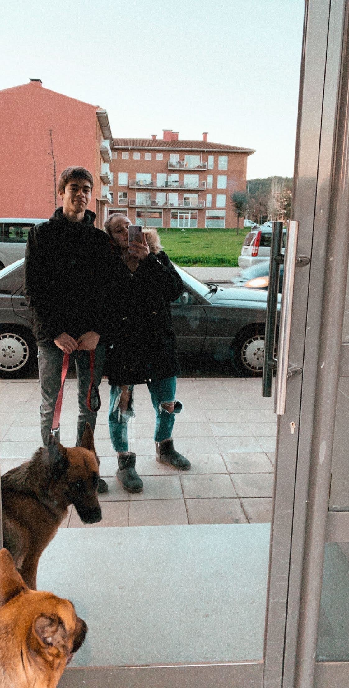

<!DOCTYPE html>
<html lang="ca"></html>
<head>
    <meta charset="UTF-8">
    <meta name="viewport" content="width=device-width, initial-scale=1.0">
    <title>Feliç Aniversari!</title>
    <style>
        @import url('https://fonts.googleapis.com/css2?family=Great+Vibes&family=Roboto:wght@400;700&display=swap');

        /* Estils generals del cos */
        body {
            margin: 0;
            font-family: 'Roboto', sans-serif;
            background: linear-gradient(to bottom, #ff758c, #ff7eb3);
            color: #fff;
            text-align: center;
            overflow-y: auto; /* Permetre scroll vertical */
            display: flex;
            justify-content: center;
            align-items: center;
            min-height: 100vh;
            padding: 20px; /* Afegir marge a dalt i a baix */
        }

        /* Contenidor principal */
        .container {
            max-width: 600px;
            padding: 20px;
            background: rgba(0, 0, 0, 0.5);
            border-radius: 20px; /* Costats arrodonits */
            box-shadow: 0 4px 15px rgba(0, 0, 0, 0.2);
            margin: 20px 0; /* Afegir marge a dalt i a baix */
        }

        /* Estil del títol */
        h1 {
            font-family: 'Great Vibes', cursive;
            font-size: 2.5rem;
            margin-top: 20px;
            animation: fadeIn 2s ease-in-out;
            text-shadow: 2px 2px 4px rgba(0, 0, 0, 0.3);
        }

        /* Estil del comptador */
        .contador {
            font-size: 1.8rem; /* Mida de font augmentada */
            margin: 10px 0;
            animation: fadeIn 3s ease-in-out;
            text-shadow: 1px 1px 3px rgba(0, 0, 0, 0.2);
            font-family: 'Great Vibes', cursive;
        }

        .contador strong {
            font-size: 2rem; /* Mida de font augmentada */
            color: #ffeb3b;
        }

        /* Estil del botó */
        .boton {
            display: inline-block;
            margin-top: 20px;
            padding: 10px 20px;
            font-size: 1rem;
            color: #fff;
            background: #ff3d73;
            border: none;
            border-radius: 20px;
            text-decoration: none;
            cursor: pointer;
            animation: pulse 2s infinite;
            transition: transform 0.3s;
            box-shadow: 0 4px 15px rgba(0, 0, 0, 0.2);
        }

        .boton:hover {
            transform: scale(1.1);
        }

        /* Animacions */
        @keyframes fadeIn {
            from { opacity: 0; transform: translateY(-20px); }
            to { opacity: 1; transform: translateY(0); }
        }

        @keyframes pulse {
            0%, 100% { box-shadow: 0 0 15px rgba(255, 61, 115, 0.8); }
            50% { box-shadow: 0 0 30px rgba(255, 61, 115, 1); }
        }

        /* Estil dels cors flotants */
        .heart {
            position: absolute;
            bottom: 0;
            width: 30px;
            height: 30px;
            background: url('https://upload.wikimedia.org/wikipedia/commons/thumb/4/42/Love_Heart_SVG.svg/1024px-Love_Heart_SVG.svg.png') no-repeat center center;
            background-size: contain;
            animation: float 5s infinite;
        }

        @keyframes float {
            0% {
                transform: translateY(0);
                opacity: 1;
            }
            100% {
                transform: translateY(-100vh);
                opacity: 0;
            }
        }

        /* Contenidor de la imatge */
        .image-container {
            position: relative;
            padding-bottom: 100%; /* Aspect ratio 1:1 */
            height: 0;
            overflow: hidden;
            max-width: 100%;
            margin: 20px 0;
        }

        .image-container img {
            position: absolute;
            top: 0;
            left: 0;
            width: 100%;
            height: 100%;
            object-fit: cover; /* Assegurar que la imatge cobreixi el contenidor */
        }
    </style>
</head>
<body>
    <div class="container">
        <h1>Han passat 5 anys meravellosos junts!</h1>
        <div class="contador" id="contador"></div>
        <div class="image-container">
            
        </div>
        <a href="cartaPersonal.html" class="boton">Comencem?</a>
    </div>

    <script>
        // Funció per actualitzar el comptador
        function actualitzarComptador() {
            const inici = new Date("2020-01-14");
            const ara = new Date();
            const diferència = ara - inici;

            const anys = Math.floor(diferència / (1000 * 60 * 60 * 24 * 365));
            const mesos = Math.floor(diferència / (1000 * 60 * 60 * 24 * 30));
            const setmanes = Math.floor(diferència / (1000 * 60 * 60 * 24 * 7));
            const dies = Math.floor(diferència / (1000 * 60 * 60 * 24));
            const hores = Math.floor(diferència / (1000 * 60 * 60));
            const minuts = Math.floor(diferència / (1000 * 60));
            const segons = Math.floor(diferència / 1000);

            document.getElementById("contador").innerHTML = `
                <strong>${anys.toLocaleString()}</strong> anys,
                <strong>${mesos.toLocaleString()}</strong> mesos,
                <strong>${setmanes.toLocaleString()}</strong> setmanes,
                <strong>${dies.toLocaleString()}</strong> dies,<br>
                <strong>${hores.toLocaleString()}</strong> hores,
                <strong>${minuts.toLocaleString()}</strong> minuts,
                <strong>${segons.toLocaleString()}</strong> segons.
            `;
        }

        // Funció per crear cors flotants
        function crearCor() {
            const heart = document.createElement('div');
            heart.classList.add('heart');
            heart.style.left = Math.random() * 100 + 'vw';
            heart.style.animationDuration = Math.random() * 2 + 3 + 's';
            document.body.appendChild(heart);

            setTimeout(() => {
                heart.remove();
            }, 5000);
        }

        // Actualitzar el comptador cada segon
        setInterval(actualitzarComptador, 1000);
        // Crear cors flotants cada 300ms
        setInterval(crearCor, 300);
    </script>
</body>
</html>
